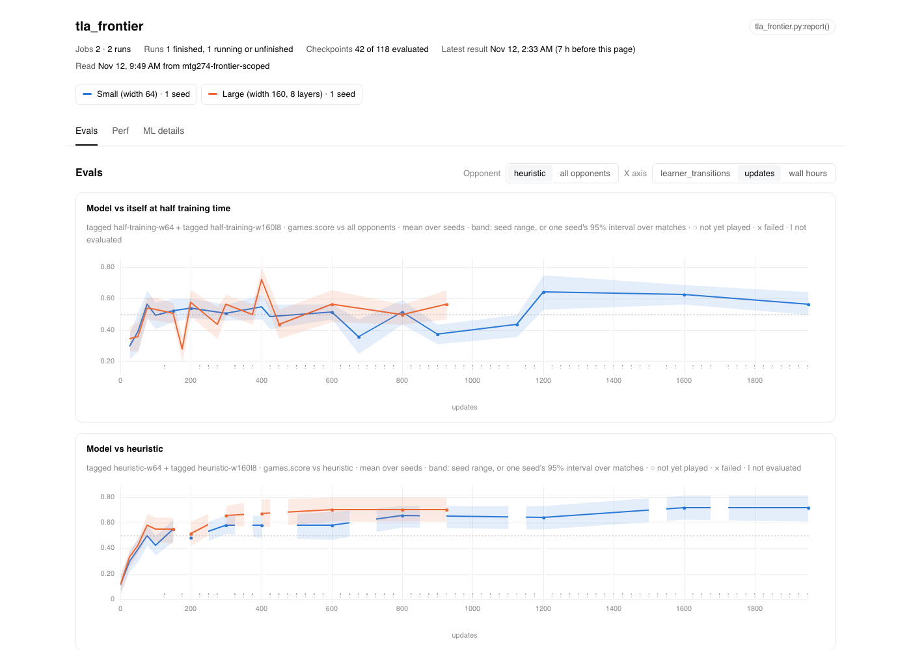
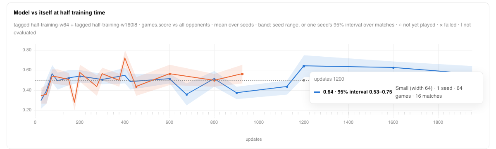
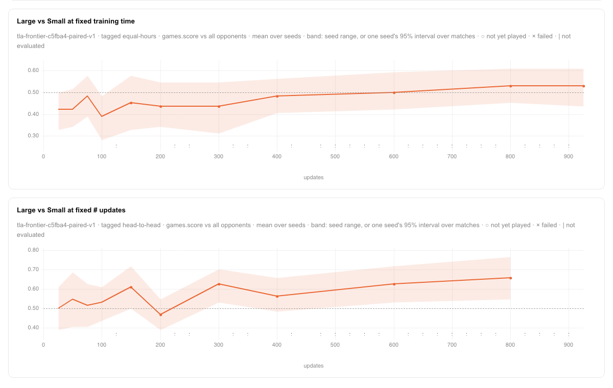
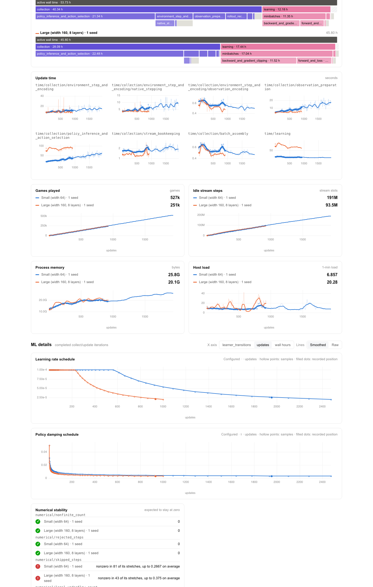

This QA used the change the way its users meet it. An experiment author writes report() from
manabot.training.report, and a reader opens the rendered Etude page. QA ran on 2026-11-12 at
branch HEAD 599620f56, with Etude 0.2.16 from the locked venv.
What I did. I built the page from the frontier's 2 training and 10 eval run prefixes in
r2://manabot/jobs, read-only through Doppler manabot/prd. The build used a wrapper
that imports experiments.tla_frontier.report and has no eval, with an empty
ETUDE_HOME (scripts in /tmp/mtg274-script/). It took 61 s at 0.77 GB peak and
produced 418 cells with no notes. The resulting page.json is byte-identical to the
earlier demo build. I opened the HTML in headless Chromium and hovered the points.
What I saw. The legend reads “Small (width 64) · 1 seed” and “Large (width 160, 8 layers) · 1 seed”. Evals shows four charts with 0.5 drawn as even. The earlier-self and heuristic charts have one line per size, and both Large vs Small charts show only Large's line. Hover text matches the docs:
updates 1200 0.64 · 95% interval 0.53–0.75 Small (width 64) · 1 seed · 64 games · 16 matches updates 925 (Model vs heuristic) 0.70 · 95% interval 0.61–0.80 Large (width 160, 8 layers) · 1 seed · 64 games · 16 matches · vs heuristic — Small (width 64) · 1 seed · not evaluated



Under ML details, both schedule charts run to each job's damping horizon (Small to about 2,474 updates, Large to about 1,000), with each run's latest update marked as a filled dot. Perf and the numerical-stability rows use the same display names.

Comparing points against the published page.json gives the same result as the demo.
Model vs heuristic and Large's head-to-head lines match exactly. Model vs itself differs where a
checkpoint was also an earlier partner (EXP-53, documented).
job_labels({"x": ("Large", w160l8), "y": ("Small", w64)})
→ {'x': 'Large (width 160)', 'y': 'Small (width 64, 2 layers)'}
learning_schedule({"y": w64}) → 77 sampled points, last at update 2474 (lr 1.99e-05)
learning_schedule({"plain": no stages}) → ValueError: plain: a learning schedule needs one damped self-play stage
against_fixed("x", "heuristic", tags=()) → ValidationError: curve_matches_must_not_be_empty
Errors name the job and the problem. As documented, job_labels names the layer count
relative to the first job. Listing Large first gives “Small (width 64, 2 layers)”. That label
is accurate but is not the intended reading. The alternative is recorded in scratch/questions.md.
Nothing. No step in either scenario broke within the change's scope.
etude report experiments/tla_frontier.py from this revision refuses the held tournament
(tournament_conflict), so I did not run the documented one-line command against this
experiment. The docs state this limitation, and EXP-55 tracks it.page.html interpolates ${panel.unit} without omitting an empty value.
This is cosmetic, and the fix belongs in Etude. No Task was filed.